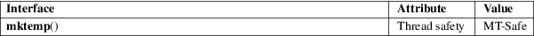

mktemp − make a unique temporary filename
Standard C library (libc, −lc)
#include <stdlib.h>
char *mktemp(char *template);
Feature Test Macro Requirements for glibc (see feature_test_macros(7)):
mktemp():
Since glibc 2.12:
(_XOPEN_SOURCE >= 500) && ! (_POSIX_C_SOURCE
>= 200112L)
|| /* glibc >= 2.19: */ _DEFAULT_SOURCE
|| /* glibc <= 2.19: */ _SVID_SOURCE || _BSD_SOURCE
Before glibc 2.12:
_BSD_SOURCE || _SVID_SOURCE || _XOPEN_SOURCE >= 500
Never use this function; see BUGS.
The mktemp() function generates a unique temporary filename from template. The last six characters of template must be XXXXXX and these are replaced with a string that makes the filename unique. Since it will be modified, template must not be a string constant, but should be declared as a character array.
The mktemp() function always returns template. If a unique name was created, the last six bytes of template will have been modified in such a way that the resulting name is unique (i.e., does not exist already) If a unique name could not be created, template is made an empty string, and errno is set to indicate the error.
|
EINVAL |
The last six characters of template were not XXXXXX. |
For an explanation of the terms used in this section, see attributes(7).

None.
4.3BSD, POSIX.1-2001. Removed in POSIX.1-2008.
Never use mktemp(). Some implementations follow 4.3BSD and replace XXXXXX by the current process ID and a single letter, so that at most 26 different names can be returned. Since on the one hand the names are easy to guess, and on the other hand there is a race between testing whether the name exists and opening the file, every use of mktemp() is a security risk. The race is avoided by mkstemp(3) and mkdtemp(3).
mktemp(1), mkdtemp(3), mkstemp(3), tempnam(3), tmpfile(3), tmpnam(3)